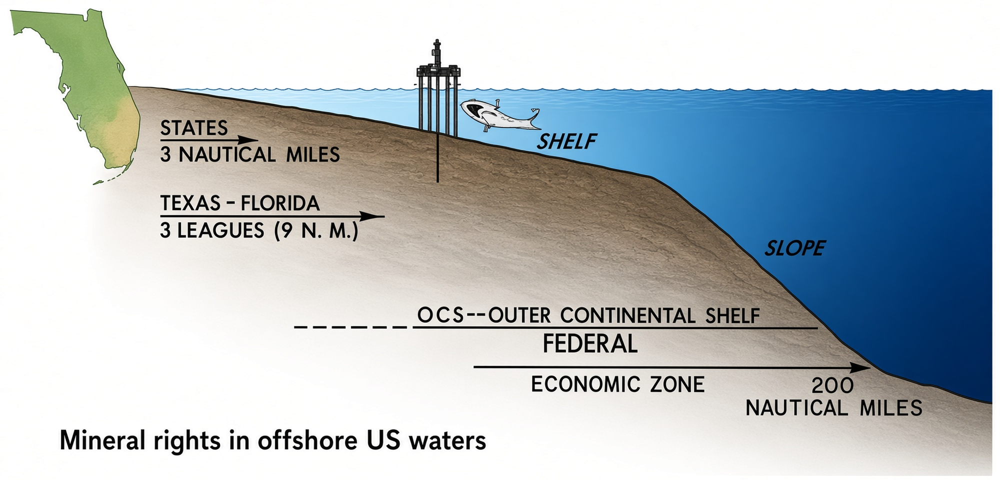
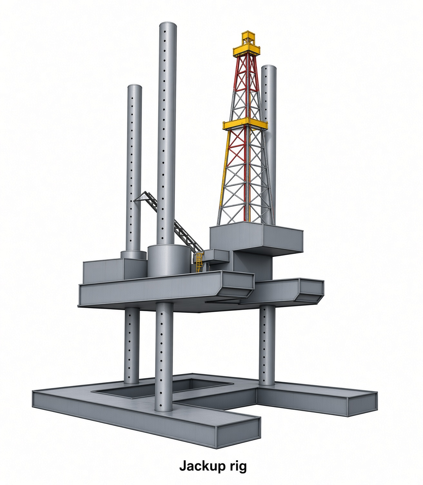
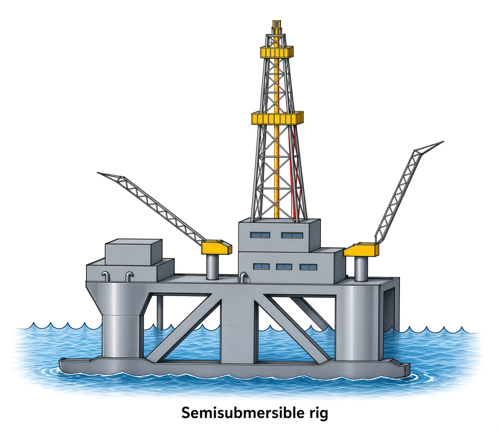
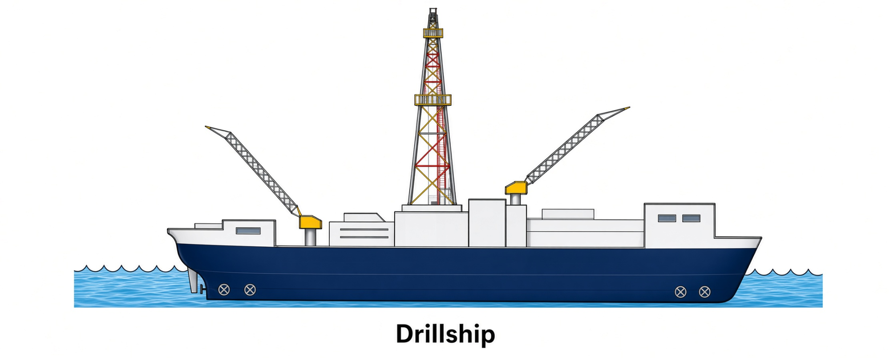
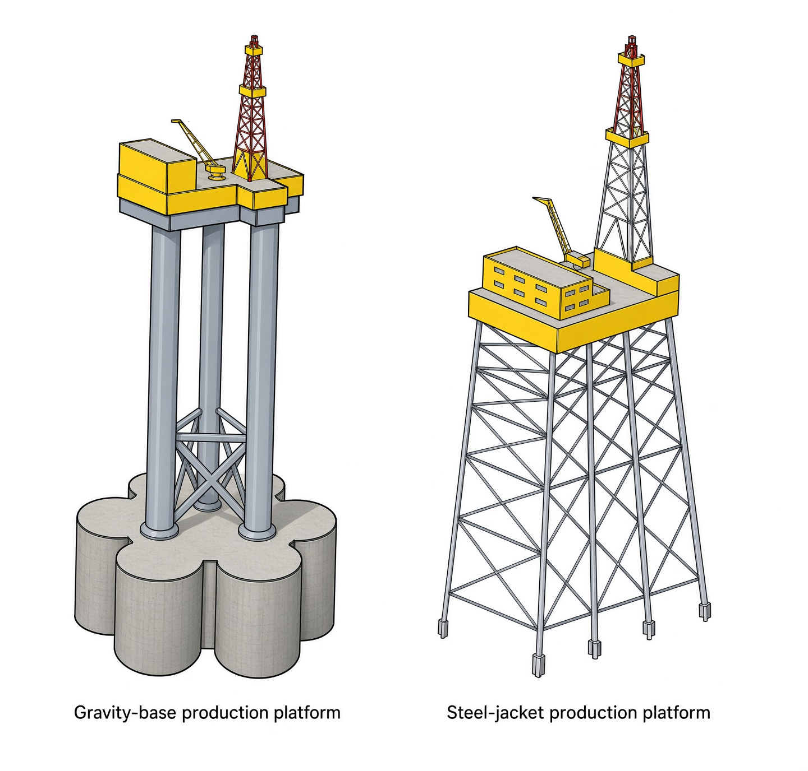
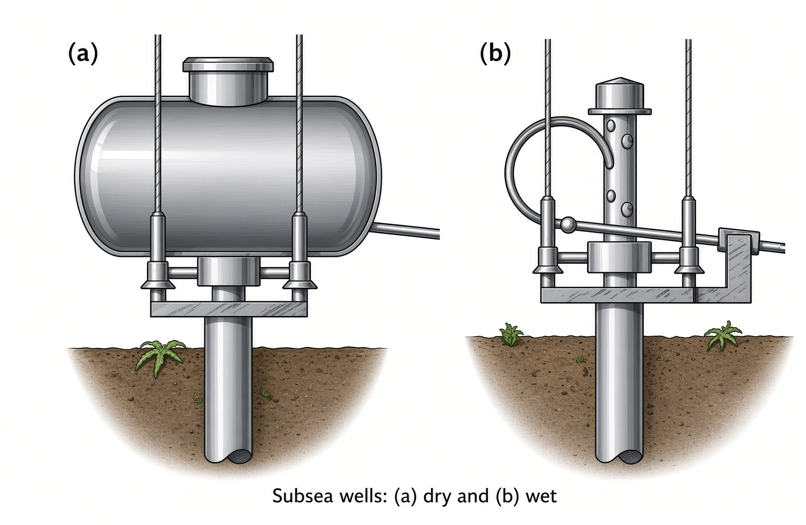
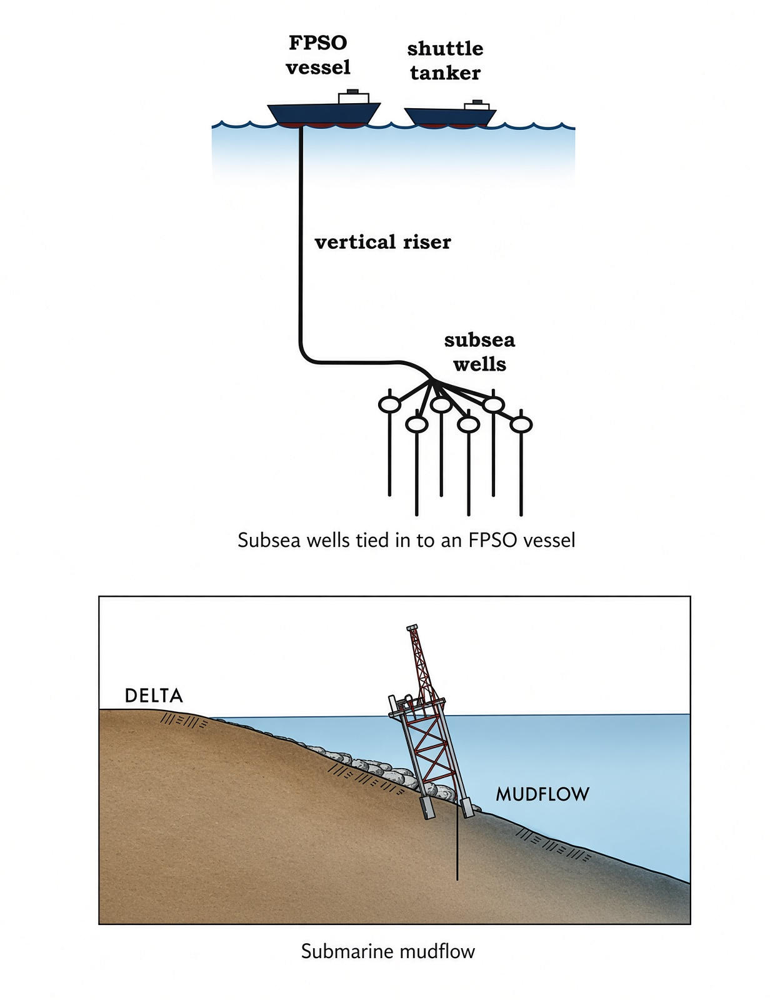

Chapter 21 — Offshore Drilling and Completion
Offshore is the same geology and the same rotary ideas as onshore—with day-rates and water depth that force different hardware. Baker Hughes had 338 active offshore rigs worldwide in 2010; that September the U.S. still drilled mostly on land (19 inland-water, 32 offshore, 30 of those in the Gulf). API’s 2008 U.S. offshore well averaged about $108 million, or $8,191/ft. In 2010 the Gulf still supplied roughly a quarter of U.S. oil and a tenth of U.S. gas—so the industry pays that bill.
Learning goals
- Place U.S. state vs federal OCS mineral rights and why UNCLOS EEZs matter (North Sea story).
- Distinguish jackup, semisubmersible, and drillship MODUs, and how floaters keep station.
- Explain why a floater starts the well on the seabed (guide base, subsea BOP, marine riser, heave compensation).
- Contrast fixed platforms, TLPs/spars/production semis, and wet/dry subsea completions.
Mineral rights
On the U.S. coast the state owns the minerals out to 3 nautical miles (Texas and Florida, 3 leagues / 9 nm). From there to 200 nm the bottom is federal OCS. Leases are sold as blocks (often 9 square nm) by sealed bonus bid, with a one-sixth royalty and a 5-year primary term—10 years in deep water. Canada splits offshore rights by province. Everywhere else, UNCLOS gives each coastal state an Exclusive Economic Zone to 200 nm.
The North Sea story is why those lines matter: Groningen (1959) proved Rotliegend dune sand under Zechstein salt, sourced by coal. The same section sits under the North Sea, so in 1964 the bordering countries carved the water into national sectors and started drilling.

Offshore drilling
Before a rig sits down, a soil survey checks slope, makeup and bearing capacity. Buoys or GPS mark the spot. The rotary itself is a land rig with the expensive options left on: top drive on vertical rails so wave motion does not swing it, iron roughnecks, closed cabins. Methods from Chapters 15–19 do not change; the support does.
Crews work 12-hour tours, two weeks on / two weeks off, three crews so one is always ashore. A board can hold a driller, assistant driller, derrickman, roughnecks, motor and pump hands, mud engineer, crane operator and roustabouts, plus toolpusher and company man. The crane both unloads supply boats and bosses the roustabouts. A drillship may sleep 200. Close to port you run crew boats; most platforms use a helideck. On a modern unit the cyber driller sits in a glass cabin and sets WOB and RPM from a joystick.
Exploratory drilling
In a lagoon or canal only ~25 ft deep the rig sits on a drilling barge. A posted barge is designed to be flooded and rest on the bottom; posts keep the drill floor above the water—swamp work, not open ocean.
Open water uses a MODU—a unit you can move when the wildcat is done. Three kinds:
Jackup. Two barge-like hulls and at least three legs through them (open-truss lattice or big tubular columns). Most are cantilevered: the derrick rides two beams that stick out past the deck so you can hang the well over a slot or next to an existing jacket. Under tow the hulls are together, legs up, and it floats. On location the lower hull (mat) is jacked onto the seafloor; jack houses then lift the upper hull until the drill floor sits about 25 ft above the waves. Soft bottom keeps the mat; hard bottom can use pointed cans on each leg instead. Legs run up to ~550 ft; practical water is generally to ~400 ft. The unit does not sink—the feet stand; the deck climbs.

Floater (water too deep for legs). Semisubmersible: a rectangular deck on columns down to pontoons ballasted 30–50 ft under the surface. Most of the buoyancy is down there, so the deck stays quiet in weather. Empty the pontoons and it rides high for a tow; a ballast specialist keeps it level. Long moves can be a dry tow on a heavy-lift ship.

Drillship: a ship with the derrick over a hole in the hull (moonpool). Some modern ships can drill two wells at once. A ship is twitchier in waves than a semi but steams faster and carries more. Discoverer Enterprise: 200 people, 10,000 ft of water, 35,000 ft below sea level.

Station-keeping is either mooring (8–12 lines of chain, wire and polyester to anchors; deep water likes a suction pile—a closed steel can pumped empty so it sucks into the mud) or dynamic positioning (satellites plus computers fire bow and stern thrusters whenever the unit drifts). Day-rate is why people flinch: Deepwater Horizon in ~5,000 ft of water was about $1 million a day before Macondo.
Spudding an offshore exploratory well
Jackup still looks like land once the legs are down. Several hundred feet of 26–30 in. conductor go into the seabed: jetted with seawater if the bottom is soup, pile-driven if firmer, drilled and cemented if it is rock. Conductor sticks up to just under the drill floor. Then a slimmer hole, surface casing, cement, BOP on that head, and the rest of the program as onshore.
A floater cannot stand a BOP in the air, so the well starts on the seabed. A hexagonal temporary guide base / template with a hole in the middle is lowered on the drillstring; four guidelines stay with the floater so later tools can follow them down. A 30–36 in. hole is drilled ~100 ft below the mudline. The first casing (foundation pile) is run with a housing and a permanent guide structure that locks onto the temporary base, then cemented. Conductor follows. A subsea BOP, fired from the floater, locks onto that wellhead with a hydraulic connector. A flexible marine riser joins BOP to rig and closes the mud loop (down the pipe, up the riser annulus). Wire-rope tensioners hang the top of the riser so it does not buckle. The floater still heaves: a telescoping joint at the top of the riser grows and shrinks; a heave compensator between traveling block and hook holds the hook—and the bit—still. In a blow or a storm you can shut the BOPs, unlatch the riser, and drive off. Later you find the well and latch back on.
Casing programs and bottom-hole completions are the same idea as Chapter 19, just with more strings (Macondo ran nine, 36 in. down to 9⅞ in.) and more sand-control (gravel packs, prepacked liners) because Gulf sands fall in.
Developmental drilling and production
A discovery is not produced from the MODU. Shallow water gets a fixed platform; deeper water gets something that floats and is tied down.
Fixed platforms (out to ~1,500 ft of water). Gravity-base: huge concrete mass on the legs—cells float the unit to location, then become ballast or oil storage; used where seas are brutal. Steel jacket: the common one. Legs built onshore, floated or barged out, flooded upright, then piled into the bottom and locked to the legs. A crane stacks deck modules (power, quarters, mud). Several decks: wellheads on a low cellar deck, separators and compressors above; treated oil or gas usually leaves in a submarine pipeline. Deep-water jackets often keep one or two derricks for workovers. In shallow water the quarters may sit on a separate platform linked by a bridge, so a fire on the process deck does not take the beds.

Floating production (too deep to stand). TLP: floats, but hollow steel tendons pull it down so it does not ride the tide—it can still wander sideways about 8% of water depth. Compliant platform: meant to sway—a guyed tower pivots on the bottom; a spar is a deep closed cylinder that does not heave with the wave. Production semi: same stability as the drilling semi. Na Kika (Gulf, ~6,300 ft) treats oil and gas for six fields up to 12 miles away; Independence Hub sits in 8,000 ft of water and gathers ten gas fields that were uneconomic alone.
Development drilling from one of these is the directional work in Chapter 17: 32–40 wells through a seafloor template. Flowing wells get a tree; lift is almost always gas lift. Law requires a storm choke at the bottom of the well that can close by hand or by itself.
Subsea work
Installation and repairs in the water are done by a saturation diver (He/O₂, to ~1,000 ft), a 1-atmosphere hard suit (to ~2,300 ft), or an ROV (umbilical to a ship, cameras and arms, useful to ~15,000 ft). Past diver depth, the ROV is the crew.
Subsea wells
A small field that cannot pay for a platform still gets wells. The tree, sensors and hydraulic valves sit on the seafloor; an ROV services them. The well is drilled from a floater. A dry completion keeps the hardware in an air chamber; a wet completion lives in seawater. Shell’s 2011 Gulf well sat in 9,356 ft of water. Flow goes to a subsea manifold, commingles with neighbours, and rides a flowline to a shallow platform, a TLP, a semi, a spar, or up a riser into an FPSO—a tanker or purpose-built hull with treating on deck. Shuttle tankers take the oil ashore. Ultra-deep water is almost all subsea. Outlying parts of a big field, or several small fields that cannot stand alone, become satellite wells tied back to one host.

Unstable sea bed
Off a delta the bottom is loose and it moves. Hurricane waves in 1969 did not punch Mississippi platforms so much as trigger submarine mudflows that kicked the legs out. Dozens of rigs have failed there; in an average year something like 110 pipelines fail for the same reason. The soil survey at the start of the chapter is not paperwork—on that kind of bottom it is why the jacket is still standing.

Key terms
- OCS
- U.S. Outer Continental Shelf—federal minerals beyond state waters.
- MODU
- Mobile offshore drilling unit: jackup, semi, or drillship.
- Jackup
- Legs stand on bottom; hull is jacked above the waves.
- Marine riser
- Pipe from subsea BOP to floater that closes the mud loop.
- Dynamic positioning
- Thrusters hold station without anchors.
- Steel jacket
- Fixed platform legs piled into the seabed.
- Wet / dry tree
- Subsea completion in seawater vs in an air chamber.
- FPSO
- Floating production, storage and offloading vessel.